Registro de melhorias em produção — Pull Requests #1 a #28 (agosto/2026)
main dispara o deploy. Cada PR passou pelo CI completo (typecheck, lint, testes de unidade, integração com banco, build, e2e + acessibilidade AAA, responsividade 380px e imagem de contêiner) antes de entrar. Não há onda nova nem regra de negócio inventada — as mudanças nasceram de uso real e homologação e reaproveitam entidades, regras e componentes existentes.
| PR | Título | Tipo | Migração de banco |
|---|---|---|---|
| #1 | Aba Comercial: editar contrato vigente | Funcionalidade | Não |
| #2 | Unificação de produção + infraestrutura AWS 1.5.0 | Infra | Não |
| #3 | Anexo do contrato em PDF, editar contato, correção do funil | Funcionalidade | Sim |
| #4 | Buildspec versionado + migrations automáticas no deploy | Infra | Não |
| #5 | Acabamento da ficha do aliado (anexo, botões, edição, layout) | UI | Não |
| #6 | Recusa de tamanho no cliente só para documento (correção) | Correção | Não |
| #7 | Scouting: reavaliar + histórico, pendências filtram, quarentena | Funcionalidade | Não |
| #8 | Scouting: recomendação na gaveta + “não se aplica” na avaliação | Funcionalidade | Sim |
| #9 | Busca global do cabeçalho passa a funcionar | Funcionalidade | Não |
| #10 | Painel de atividades (comentários, pendências, @menção) | Funcionalidade | Sim |
| #11 | Ficha do aliado: painel no laptop, gaveta em linha, abas em âncora | UI | Não |
| #12 | Painel abre sozinho só em tela grande | UI | Não |
| #13 | Importação de catálogo por planilha: soluções e ofertas | Funcionalidade | Sim |
| #14 | Menção por @ inline no painel de atividades | UI/UX | Não |
| #15 | Correção: caixa de @menção fechada sobrepondo a dica | Correção | Não |
| #16 | Documentação das melhorias (este documento, 1ª versão) | Documentação | Não |
| #17 | Correção: upload da planilha de ofertas travado em “Enviando…” | Correção | Não |
| #18 | Dashboard, listas e funil atualizam após importar; “Corrigir” não fica em branco | Correção | Não |
| #19 | Pendência de “Cupom de desconto” volta a ser corrigível na conferência | Correção | Não |
| #20 | “Recompensa”: pendência de preço aponta o campo preenchido | Correção | Não |
| #21 | Correção de deploy: imagem de operação puxa do espelho AWS (429) | Infra | Não |
| #22 | Código/regras do cupom deixa de ser obrigatório | Ajuste de regra | Não |
| #23 | Tipo “% de desconto” usa campo de percentual (substitui o preço) | Funcionalidade | Sim |
| #24 | Imagem do card vira item opcional para publicar (RN09) | Ajuste de regra | Não |
| #25 | Natureza decide %/valor; renomeia “Benefício” e “Cupom de desconto” | Funcionalidade | Não |
| #26 | Régua de completude proporcional; descrição curta vira opcional; rótulos de natureza na tabela da solução | Ajuste de regra | Não |
| #27 | “Baixar modelo (.csv)” na importação de telemetria | Funcionalidade | Não |
| #28 | Id externo (Minutrade) editável no formulário e na importação (vínculo da telemetria) | Funcionalidade | Não |
Primeira rodada pós-produção: acabamento e correções nascidos de uso real e da homologação com a base povoada. Reaproveita entidades, regras e componentes existentes.
A ficha do aliado passou a permitir editar o contrato vigente (comissão, vigência, dados comerciais) sem ter de recriar o registro. Toda alteração é auditada (valor anterior/novo/autor) e respeita as permissões por papel.
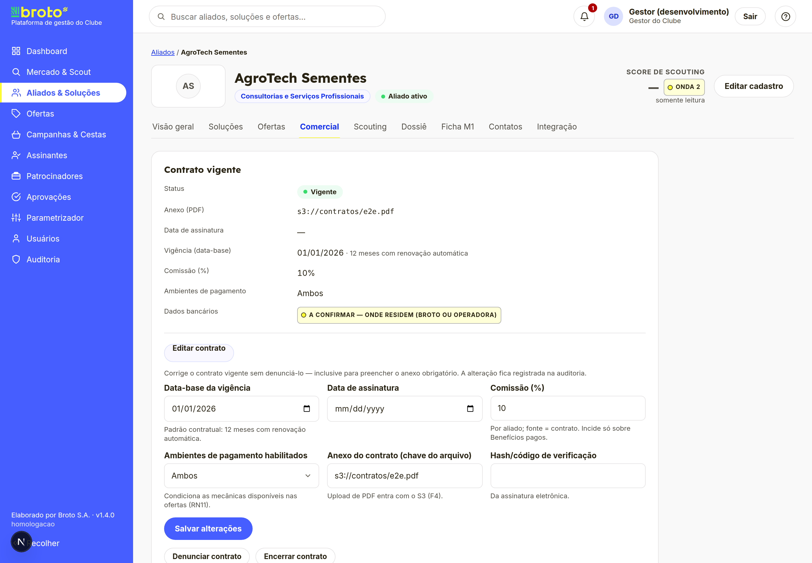
Consolidação da aplicação com a infraestrutura AWS (versão 1.5.0) e transformação do buildspec em arquivo versionado, com migrations aplicadas automaticamente no deploy. Base para que cada merge na main chegue à produção de forma repetível.
O contrato ganhou anexo em PDF (upload validado por tipo real e tamanho, guardado pela plataforma e auditado), a lista de contatos passou a ser editável e uma correção no funil de prospecção entrou junto. Migração aditiva para a tabela do anexo.
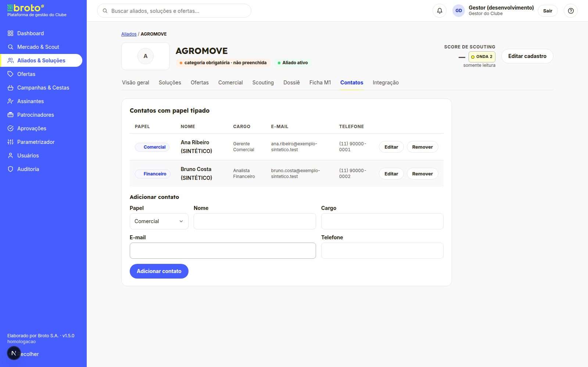
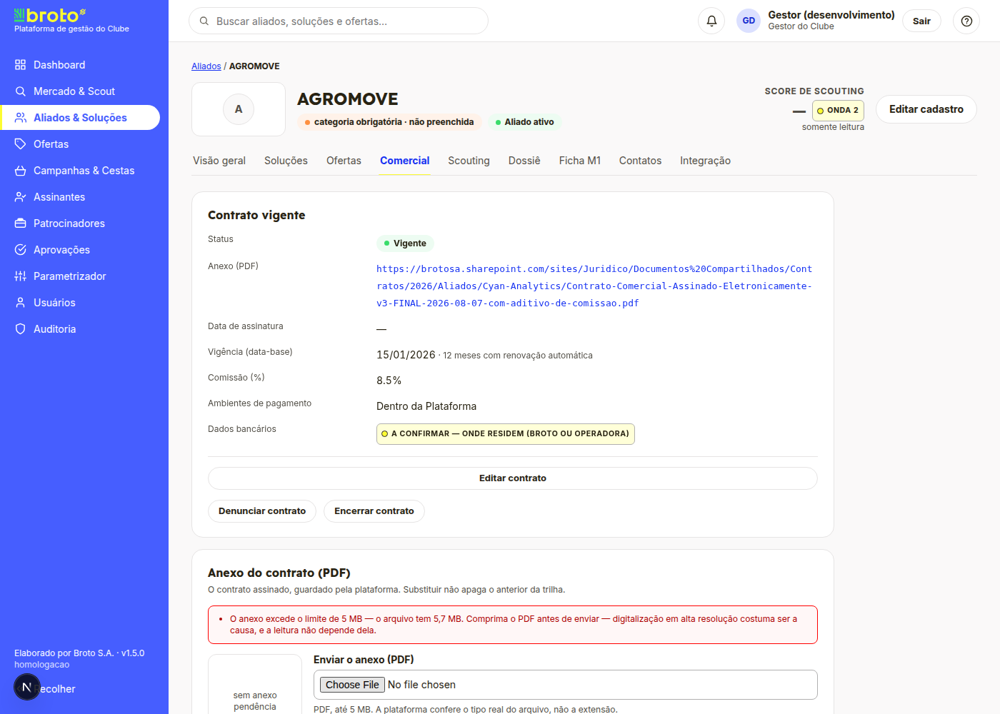
Rodada de acabamento visual/UX (anexo clicável, botões centralizados, botão “Cancelar” na edição, correção do vão à direita em telas largas) e uma correção de regressão: a recusa de tamanho no cliente voltou a valer apenas para documento, não para imagens.
Ajustes do módulo Mercado & Scout vindos da homologação: reavaliar um prospect mantendo o histórico, pendências que filtram a lista, recomendação exibida na gaveta e a opção “não se aplica” na avaliação (excluída do score). Migração aditiva (nota anulável + campo de “não se aplica”).
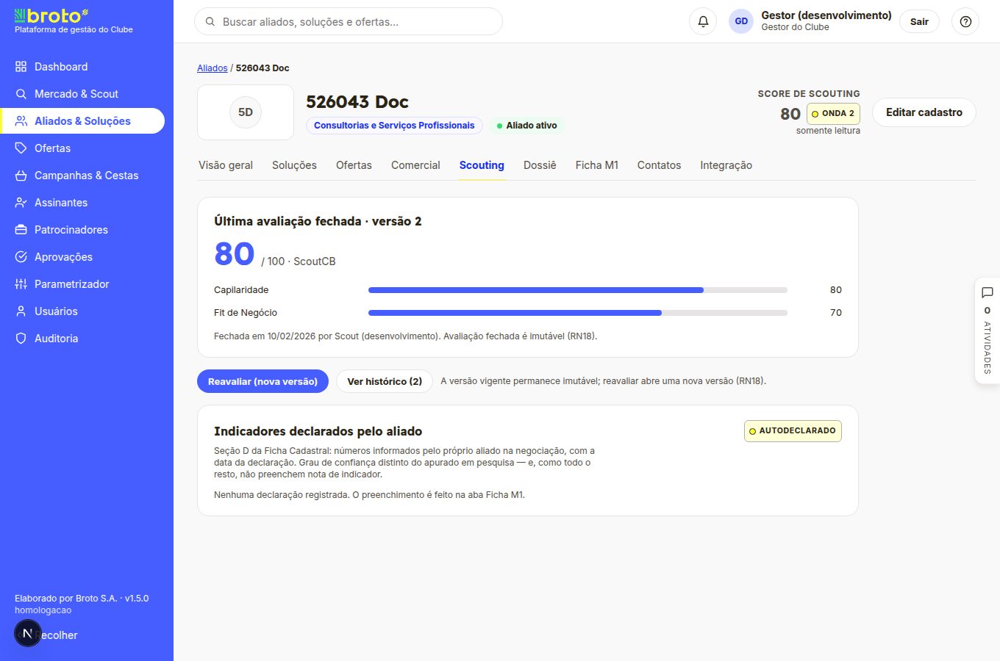
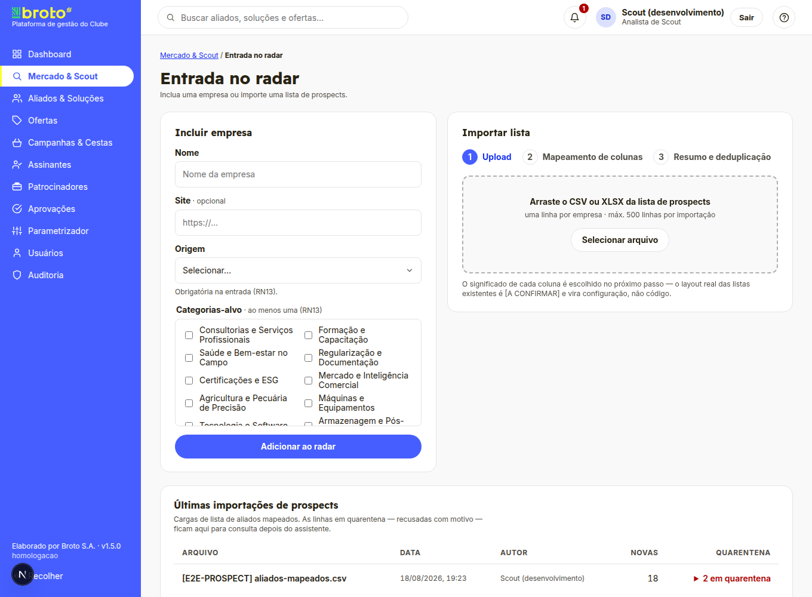
A busca do topo (aliados, soluções e ofertas) passou a funcionar de fato, com resultados agrupados e navegação direta.
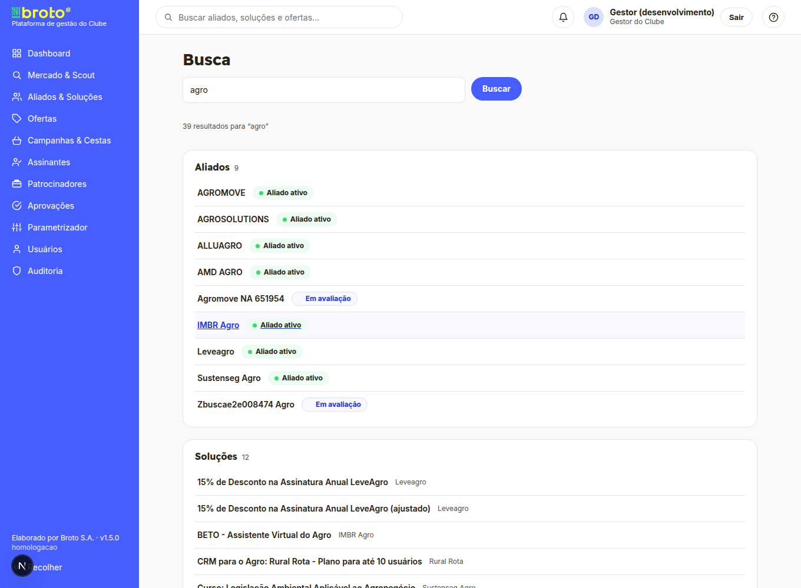
Um painel de atividades na ficha do aliado reúne comentários, pendências e menções por @ — com permissões, auditoria e o “sino” de pendências. A responsividade foi ajustada (painel no laptop, gaveta em linha, abas por âncora; abertura automática só em tela grande) e a menção evoluiu para autocomplete inline: digitar @ abre a lista de quem mencionar (teclado e mouse), com acessibilidade AAA. Uma correção visual fechou a sobreposição da caixa de sugestões sobre a dica.
Importação self-service de soluções e ofertas por planilha: baixa-se o modelo, sobe-se o arquivo, e uma tela de conferência mostra o que será criado/atualizado e as pendências antes de efetivar. Migração aditiva para as tabelas de staging.
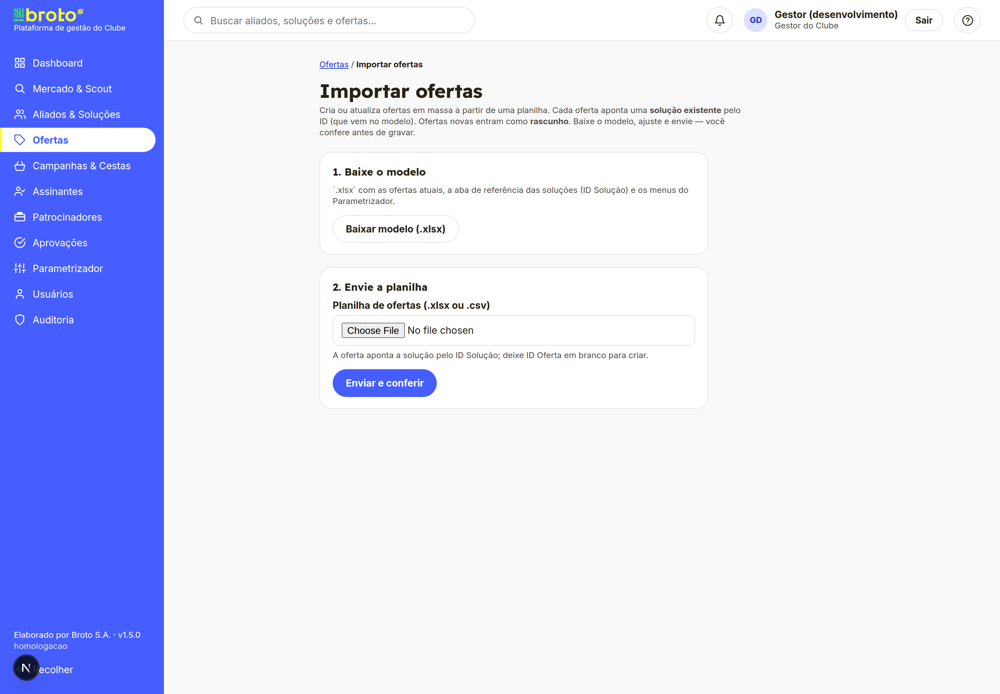
Segunda rodada, focada no ciclo de ofertas (cadastro, importação, publicação) e num conserto de deploy. Nasceu do uso real logo após a importação entrar no ar.
Primeira versão deste registro (da PR #1 à #15), em Markdown, HTML e Word. Este documento é a versão atualizada, estendida até a PR #28 e ilustrada com telas reais.
Sintoma: ao subir a planilha de ofertas, a tela ficava presa em “Enviando…”. Causa: um padrão do Next.js em que o redirecionamento de uma ação de servidor para a mesma rota, com uma resposta grande, era descartado pelo navegador. Correção: a conferência passou a abrir em rota própria (uma URL distinta por lote), eliminando o travamento.
Sintoma: depois de importar, o Dashboard, as listas e o funil não refletiam a nova quantidade de soluções/ofertas; e o botão “Corrigir” de uma pendência abria uma tela em branco. Correção: a efetivação passou a revalidar os caches de navegação (os números atualizam sem recarregar), e a correção de célula deixou de usar o redirecionamento problemático — mesma causa do item anterior.
Sintoma: uma oferta “Cupom de desconto” com pendência não podia ser resolvida na conferência. Causa: a mensagem apontava a coluna “Natureza” (lista fechada), sem oferecer o campo certo. Correção: cada pendência passou a apontar a coluna que se edita para resolvê-la (código/regras, modalidade etc.).
Sintoma: em ofertas “Recompensa”, a pendência de “preços devem ficar zerados” sempre indicava “Preço Por”, mesmo quando o valor estava em “Preço De”. Correção: a pendência passou a apontar o campo efetivamente preenchido, dando saída à correção.
Sintoma: um deploy não chegou à produção. Causa: a esteira construía uma segunda imagem (a de operação/migrations) puxando a base do Docker Hub, que passou a recusar com “429 — muitas requisições”; a falha interrompia todo o restante do deploy. Correção: essa imagem passou a puxar do espelho oficial da AWS (sem limite por IP), como a imagem principal já fazia.
Decisão de negócio: o campo “Código/regras do cupom” pode não existir na carga e nunca deve travar o cadastro nem a importação. O cupom continua exigindo um desconto definido; apenas o código virou opcional.
Decisão de negócio: quando o desconto é percentual, não faz sentido pedir um valor em reais. A oferta ganhou um campo de percentual (inteiro de 1 a 100) que substitui o preço de/por — some o preço, fica só o “%”. O card passa a exibir “X% de desconto”. Migração aditiva (coluna nova, anulável). Ofertas antigas permanecem intactas.
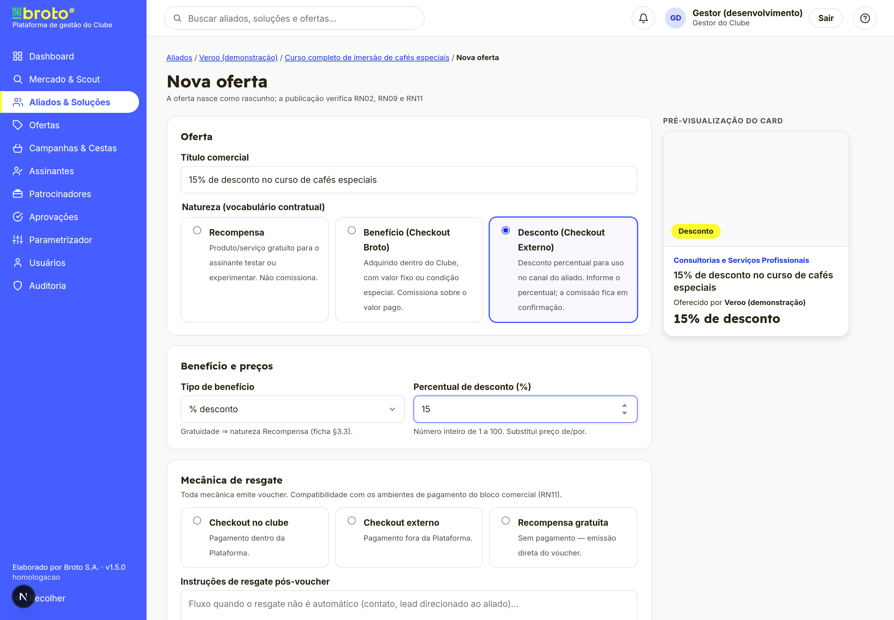
Decisão de negócio: a imagem do card deixou de ser exigida para publicar uma oferta (a descrição curta continua obrigatória). Na régua de completude ela aparece como “(opcional)” e não bloqueia — uma solução completa nos demais itens já chega a 100% e fica publicável mesmo sem imagem. O campo de envio continua disponível.
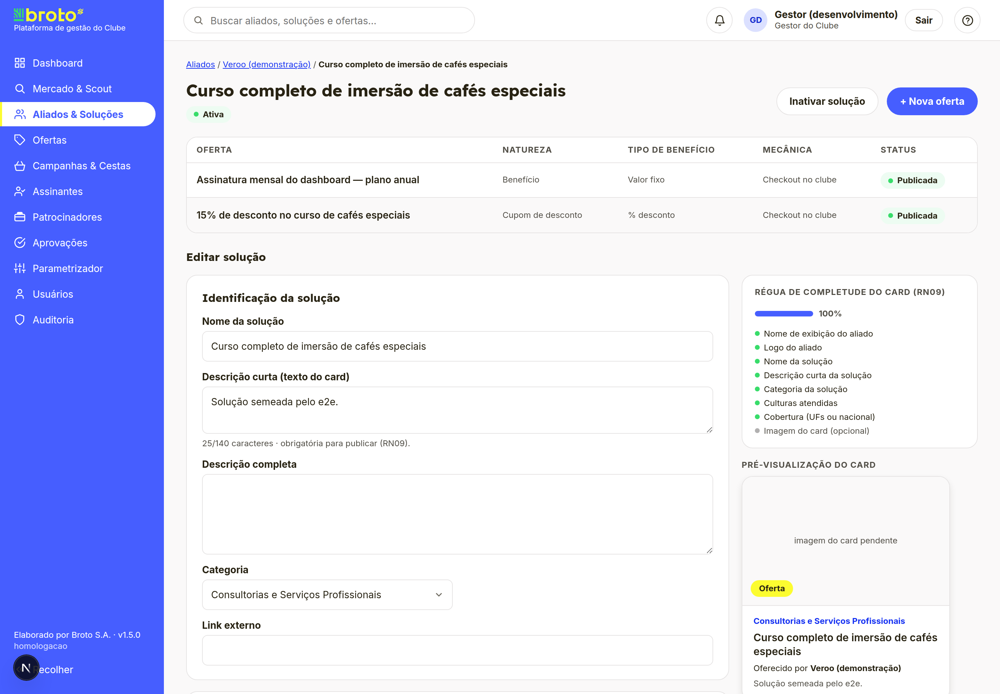
Decisão de negócio. O cadastro de oferta passou a decidir entre percentual e valor pela natureza, e duas naturezas foram renomeadas conforme o canal de checkout:
Os renomes são só de exibição (o dado interno não muda, sem migração). A importação aceita os nomes novos e os antigos. Ofertas legadas com combinação agora inválida são toleradas; na edição, o tipo começa vazio, forçando a nova escolha.
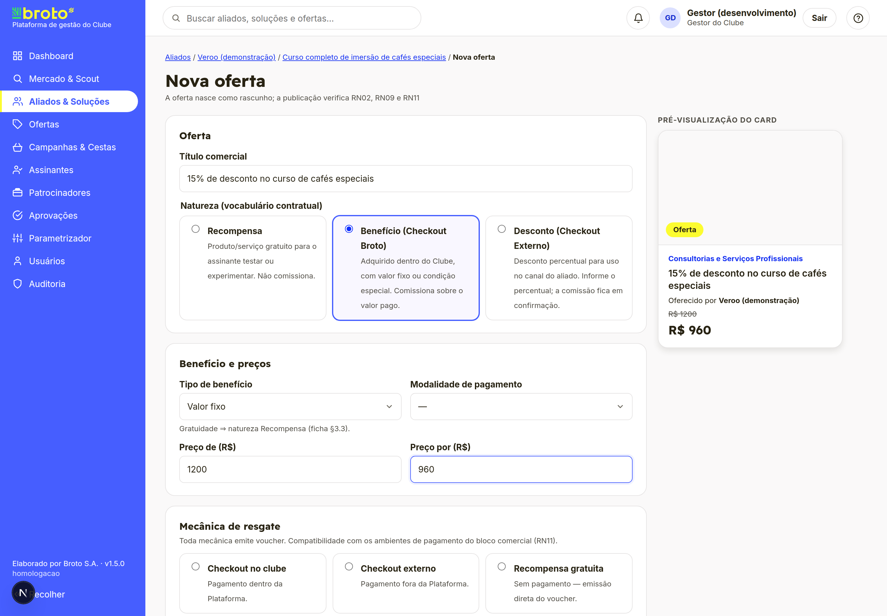
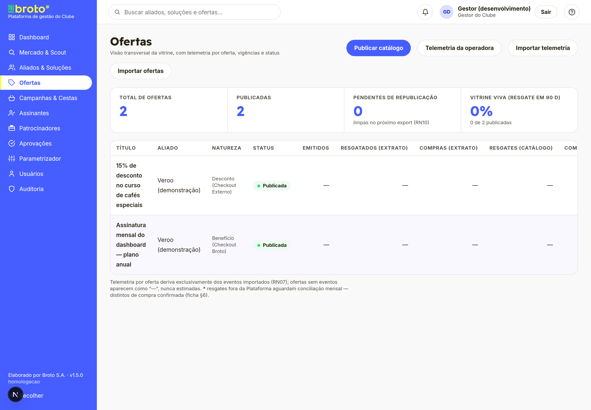
Terceira rodada, nascida de uso e homologação: afina a régua de completude, dá ao operador um modelo pronto para a importação de telemetria e fecha a ponta que ligava a telemetria à oferta certa. Nenhuma migração de banco e nenhuma regra de negócio inventada.
Decisão de negócio. A régua de completude do card passou a ter duas medidas distintas:
“Opcional” passou a significar “não obrigatório para publicar”, e não “fora da conta”. A descrição curta virou item opcional (mesmo tratamento da imagem, do PR #24) e a tabela de ofertas da solução passou a exibir os novos rótulos de natureza (“Benefício (Checkout Broto)”, “Desconto (Checkout Externo)”), alinhada à lista de ofertas.
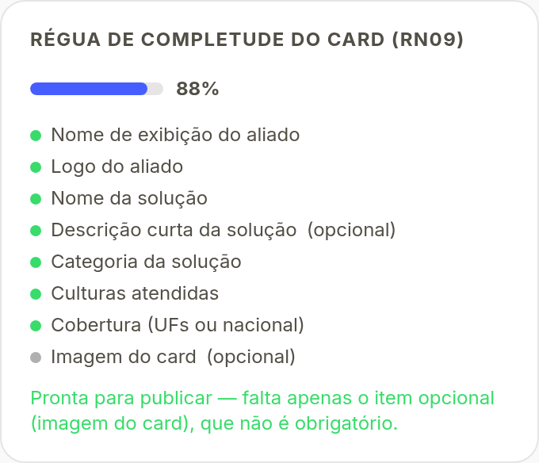
A tela de Importar telemetria ganhou o mesmo recurso que o importador de soluções já tinha: baixar um modelo pronto antes de montar o arquivo, para não errar coluna nem formato de data e cair em quarentena por engano. O modelo traz o cabeçalho na ordem certa e uma linha de exemplo por evento reconhecido (emissão, resgate e compra); o CPF de exemplo é sintético.
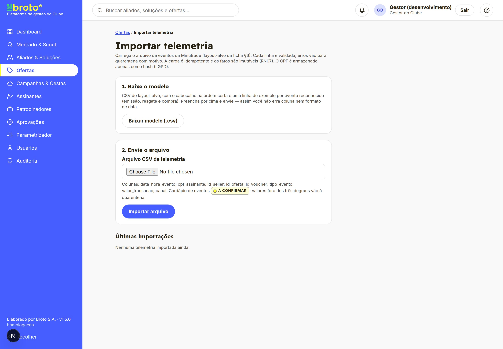
Contexto. A telemetria importada se liga a cada oferta pelo campo Id externo (Minutrade) (a coluna id_oferta do arquivo casa com esse campo). Antes, só a carga inicial o preenchia — ofertas criadas na plataforma nasciam sem ele, e a telemetria delas caía como “sem vínculo”. Não havia onde informá-lo.
Entrega. O campo passou a ser editável nos dois caminhos de cadastro:
.xlsx; a duplicidade é detectada já na conferência (contra ofertas existentes e entre linhas da mesma planilha).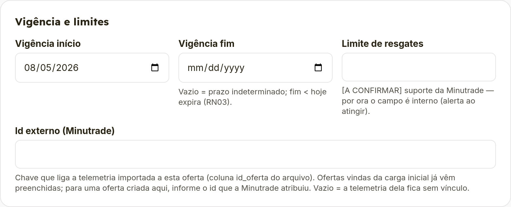
id_oferta do arquivo de telemetria; a primeira importação real com ofertas novas é o teste desse contrato.